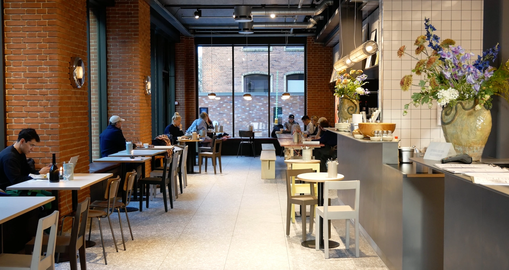

KISMET
Indrebys nye perle
Kismet på Adelgade byder på en uovertruffen kombination af kvalitetskaffe, lækre og sunde retter samt hjemmelavet surdejsbrød fra deres egen bager. Kaffen er nøje udvalgt og brygget til perfektion, mens menuen rummer et udvalg af velsmagende retter, der både er nærende og tilfredsstillende. Deres surdejsbrød, der bliver bagt på stedet, er et højdepunkt, og de populære kardemommesnurrer har hurtigt vundet hjerterne hos de besøgende.
